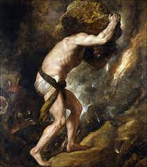

The
Myth of Sisyphus
(In the ancient city of Corinth
reigned a
rather cunning man his name was
Sisyphus. He was probably the
smartest
man of his time, the smartest but not
thewisest. Sisyphus was a direct descendent of
Prometheus. This deity had the boldness of to stick his
nose
into the matters of Zeus and paid for the
intermission and much like his
ancestor Sisyphus
decided to interfere in the gods affairs. He witnessed
the kidnapping of the young and beautiful Aegena by the eagle shaped Zeus and he
realized he could take advantage of it. Although he was king of a glorious city
this metropolis struggled with a shortage of drinking water. Young Aegena was
the daughter of Asopus, a river god who was deeply saddened by the
disappearance of his daughter.)
Sisyphus went to Asopus and
declared: - I know where your daughter is but this information comes at a price,
in return I want you to create a spring of water to supply my kingdom.
(Asopus accepted Sisyphus’s offer
and created a spring of the purest mineral water. Sisyphus revealed to him what
he knew and Asopus went after his daughter. King Sisyphus was pleased this new
spring would be a source of abundance and even more prestige to his city. Zeus
the supreme lord of Olympus was enraged with Sisyphus’s revelation and ordered
Thanatos also known as death to find him and take his life. Some time passed
before Sisyphus was surprised by seeing Thanatos in his palace. But an idea
sprung up in his mind)
Sisyphus went to death and said:
- so it seems my time has come I did not expect to die so young however I am
much surprised by your splendor indeed you are such a magnificent deity you
shall know of the many gods I have known. Few carry such a remarkable and
elegant figure and before I leave I would like to present you some ornaments
that will make your presence for dazzling after all these jewels will no longer
be use to me. Thanatos felt flattered with such a torrential stream of
compliments and decided to accept the gifts. Sisyphus put a pair of silver
bracelets and a necklace on Thanatos. However those were shackles and collar
the Corinthian king did what appeared to be impossible until that point he
managed to cheat death and Thanatos became his prisoner. Time passed and no one
died anymore. The kingdom of Hades was no longer receiving any new subjects. On
the banks of the river Acheron, Charon had no more passengers to cross the
waters. The wars set by the god Ares were no longer a source of pleasure for
him as nobody died. The enraged Ares traveled to Corinth, he knocked down the
palace door and broke the chains that imprisoned Thanatos. Free the god of the
death was absolutely sure of his first target and started his search for king
Sisyphus to complete the mission that Zeus had handed him.)
But Sisyphus was expecting that
so he told his wife that if he died prematurely, she would not render the royal
funeral services.
(Sisyphus delivered himself
peacefully to Thanatos, who took his life. Charon was already ready to take him
to the kingdom of Hades, the lord of the underworld. The river of the dead was
filled with souls already on Thanatos’s list who only now had been sought. Upon
arriving in the kingdom of Hades he was face to face with the god of the
underworld who appeared quite unhappy. After being severally admonished by the
great god Sisyphus delivered a speech that he already devised even before his
death)
Sisyphus: -noble lord of the
underworld, I’m aware of my wrong doings against you and the harm I’ve caused
but that was not my intention if I had known that, I would harm the great god
of the world of the dead, I never would have done so aware I am in debt to you,
I have a plea to make, my obnoxious wife refused to perform the proper funeral
rites for a king who was so dear to his people that abominable women tossed me
out as if I were nothing but a dog carcass. I therefore beg you to let me
return to the world of the living for only one day. So that I may take revenge
on my wife and set up a proper funeral which would honor the kingdom of the
dead
Hades: - you have my permission to
visit in the world of the living for only one day. However by nightfall you
shall return to my domains
(Sisyphus gave his word that he
would return promptly. Sisyphus returned to Corinth. There he met his wife and
fled with her. Once again he had cheated death. Now concealed Sisyphus lived a
long life and reached his an old age. Until he encountered his inevitable end
and encountering Thanatos once more his cleverness would no longer help him.
Upon returning to the underworld Hades sent him to Tartarus where he received a
appalling torment. Sisyphus was forced to roll a heavy boulder from a plane to
a mountain. But every time he got close to the summit horrendously heavy and
rolled back to the starting point, Sisyphus was condemned to restart his work
for all eternity.)
Download